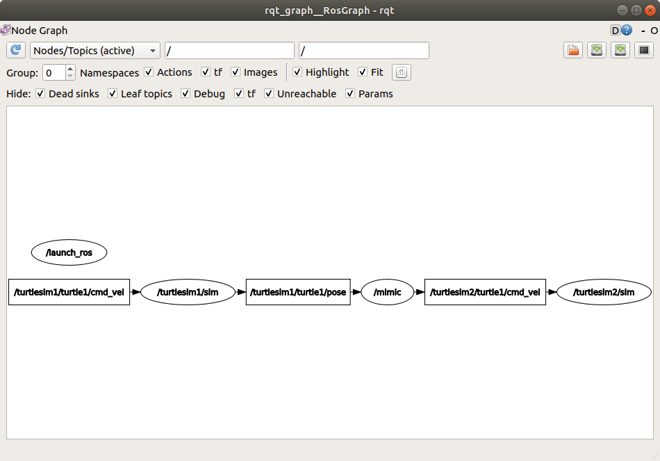

创建启动文件
目标: 创建启动文件以运行复杂的 ROS 2 系统.
教程等级: 中级
预计时长: 10 分钟
前提条件
本教程会用到 rqt_graph 和 turtlesim 包。
你还需要准备好你想用的文本编辑器。
当然还有，别忘了在 每个新终端中都要 source ROS 2 环境。
背景
ROS 2 中的启动系统负责帮助用户描述其系统的配置，然后按描述执行。 系统配置包括运行哪些程序、在哪里运行、传递哪些参数，以及 ROS 特有的约定，通过为每个组件提供不同的配置，可以方便地在整个系统中重复使用组件。 它还负责监控已启动进程的状态，并对这些进程的状态变化做出报告和/或反应。
用 Python、XML 或 YAML 编写的启动文件可以启动和停止不同的节点，以及触发和执行各种事件。
有关不同格式的启动文件的描述，请参见 Using Python, XML, and YAML for ROS 2 Launch Files。
提供此框架的包是 launch_ros，它可以在在非 ROS 特定的 launch 框架下使用。
设计文档 详细说明了 ROS 2 启动系统设计的目标（目前并非所有功能都可用）。
一般我们谈论到启动文件时，会习惯把他以一个专有名词的形式来称呼： launch file .
任务
1 配置
创建一个新文件夹存储启动文件：
mkdir launch
2 编写启动文件
让我们为 turlesim 和它的可执行文件编写一个 ROS 2 启动文件。 如上所述，启动文件可以是 Python、XML 或 YAML 格式的。
复制以下代码然后粘贴到 launch/turtlesim_mimic_launch.py 中:
from launch import LaunchDescription
from launch_ros.actions import Node
def generate_launch_description():
return LaunchDescription([
Node(
package='turtlesim',
namespace='turtlesim1',
executable='turtlesim_node',
name='sim'
),
Node(
package='turtlesim',
namespace='turtlesim2',
executable='turtlesim_node',
name='sim'
),
Node(
package='turtlesim',
executable='mimic',
name='mimic',
remappings=[
('/input/pose', '/turtlesim1/turtle1/pose'),
('/output/cmd_vel', '/turtlesim2/turtle1/cmd_vel'),
]
)
])
复制以下代码然后粘贴到 launch/turtlesim_mimic_launch.xml 中:
<launch>
<node pkg="turtlesim" exec="turtlesim_node" name="sim" namespace="turtlesim1"/>
<node pkg="turtlesim" exec="turtlesim_node" name="sim" namespace="turtlesim2"/>
<node pkg="turtlesim" exec="mimic" name="mimic">
<remap from="/input/pose" to="/turtlesim1/turtle1/pose"/>
<remap from="/output/cmd_vel" to="/turtlesim2/turtle1/cmd_vel"/>
</node>
</launch>
复制以下代码然后粘贴到 launch/turtlesim_mimic_launch.yaml 中:
launch:
- node:
pkg: "turtlesim"
exec: "turtlesim_node"
name: "sim"
namespace: "turtlesim1"
- node:
pkg: "turtlesim"
exec: "turtlesim_node"
name: "sim"
namespace: "turtlesim2"
- node:
pkg: "turtlesim"
exec: "mimic"
name: "mimic"
remap:
-
from: "/input/pose"
to: "/turtlesim1/turtle1/pose"
-
from: "/output/cmd_vel"
to: "/turtlesim2/turtle1/cmd_vel"
2.1 测试启动文件
上面的启动文件启动了一个由 turtlesim 包的三个节点组成的系统。
系统的目标是启动两个 turtlesim 窗口，并使一个 turtle 模仿另一个 turtle 的移动。
启动的这两个 turtlesim 节点之间唯一的区别是它们的命名空间不同。 专有的命名空间使得系统可以启动两个节点，而无需考虑节点名称或 topic 名称冲突。 在此系统中，两只乌龟都通过相同的 topic 接收命令，并通过相同的 topic 发布它们的位姿。 通过专有的命名空间，可以区分为不同乌龟设计的消息。
最后一个节点也是 turtlesim 包的，但是它运行一个可执行文件： mimic 。
这个节点添加了一些有关重映射的配置细节。
mimic 的 /input/pose topic 被重映射到 /turtlesim1/turtle1/pose，它的 /output/cmd_vel topic 被重映射到 /turtlesim2/turtle1/cmd_vel。
换句话说就是， turtlesim2 将模仿 turtlesim1 的移动。
这些 import 语句引入了一些 Python launch 模块。
from launch import LaunchDescription
from launch_ros.actions import Node
接下来，是对启动配置的描述：
def generate_launch_description():
return LaunchDescription([
])
前两个 actions 描述了启动两个 turtlesim 窗口：
Node(
package='turtlesim',
namespace='turtlesim1',
executable='turtlesim_node',
name='sim'
),
Node(
package='turtlesim',
namespace='turtlesim2',
executable='turtlesim_node',
name='sim'
),
最后一个 action 启动了 mimic 节点，并进行了重映射：
Node(
package='turtlesim',
executable='mimic',
name='mimic',
remappings=[
('/input/pose', '/turtlesim1/turtle1/pose'),
('/output/cmd_vel', '/turtlesim2/turtle1/cmd_vel'),
]
)
The first two actions launch the two turtlesim windows:
<node pkg="turtlesim" exec="turtlesim_node" name="sim" namespace="turtlesim1"/>
<node pkg="turtlesim" exec="turtlesim_node" name="sim" namespace="turtlesim2"/>
The final action launches the mimic node with the remaps:
<node pkg="turtlesim" exec="mimic" name="mimic">
<remap from="/input/pose" to="/turtlesim1/turtle1/pose"/>
<remap from="/output/cmd_vel" to="/turtlesim2/turtle1/cmd_vel"/>
</node>
The first two actions launch the two turtlesim windows:
- node:
pkg: "turtlesim"
exec: "turtlesim_node"
name: "sim"
namespace: "turtlesim1"
- node:
pkg: "turtlesim"
exec: "turtlesim_node"
name: "sim"
namespace: "turtlesim2"
The final action launches the mimic node with the remaps:
- node:
pkg: "turtlesim"
exec: "mimic"
name: "mimic"
remap:
-
from: "/input/pose"
to: "/turtlesim1/turtle1/pose"
-
from: "/output/cmd_vel"
to: "/turtlesim2/turtle1/cmd_vel"
3 ros2 launch
要运行上面创建的启动文件，进入之前创建的目录并运行以下命令：
cd launch
ros2 launch turtlesim_mimic_launch.py
cd launch
ros2 launch turtlesim_mimic_launch.xml
cd launch
ros2 launch turtlesim_mimic_launch.yaml
Note
可以直接启动一个启动文件（如上所示），也可以从包中运行。 如果要从包中运行，运行命令是这样构成的：
ros2 launch <package_name> <launch_file_name>
你已经在 创建 ROS 2 包 中学到了如何创建包。
Note
对于包含 launch 文件的包，最好在包的 package.xml 文件中添加一个 exec_depend 依赖项，声明依赖于 ros2launch 包：
<exec_depend>ros2launch</exec_depend>
这使得构建包后，ros2 launch 命令确定是可用的。
而且还确保了所有 launch 文件格式 都能够被识别。
会出现两个小乌龟窗口，而其能看到以下 [INFO] 消息，告诉你启动文件启动了哪些节点：
[INFO] [launch]: Default logging verbosity is set to INFO
[INFO] [turtlesim_node-1]: process started with pid [11714]
[INFO] [turtlesim_node-2]: process started with pid [11715]
[INFO] [mimic-3]: process started with pid [11716]
要查看系统的运行情况，打开一个新终端并在 /turtlesim1/turtle1/cmd_vel topic 上运行 ros2 topic pub 命令，让第一个小乌龟移动：
ros2 topic pub -r 1 /turtlesim1/turtle1/cmd_vel geometry_msgs/msg/Twist "{linear: {x: 2.0, y: 0.0, z: 0.0}, angular: {x: 0.0, y: 0.0, z: -1.8}}"
你会看到两只乌龟都沿着相同的路径移动。

4 用 rqt_graph 检查系统
在系统还在运行的时候，打开一个新终端并运行 rqt_graph 命令，可以帮助你更好地了解启动文件中节点之间的关系。
运行命令：
rqt_graph

有一个隐藏节点(你运行的 ros2 topic pub 命令产生的节点)在左边的 /turtlesim1/turtle1/cmd_vel topic 上发布数据，同时 /turtlesim1/sim 节点订阅了这个 topic 。
图中的其它部分是我们已经说国的：mimic 订阅了 /turtlesim1/sim 的 pose topic，并发布到 /turtlesim2/sim 的 velocity command topic。
总结
启动文件简化了有许多节点和特定配置细节的复杂系统的运行方式。
可以使用 Python、XML 或 YAML 创建启动文件，并使用 ros2 launch 命令运行它们。